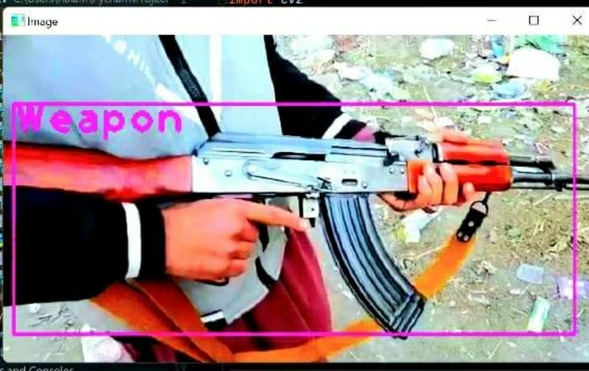

Developed using Python, OpenCV, YOLO (You Only Look Once). This work focuses on providing a secure place using CCTV footage as a source to detect harmful weapons by applying open-source deep learning algorithms. We used different algorithms like Convolutional Neural Networks and YOLO for object detection.By using bounding boxes it will show where the weapon is located in the image
